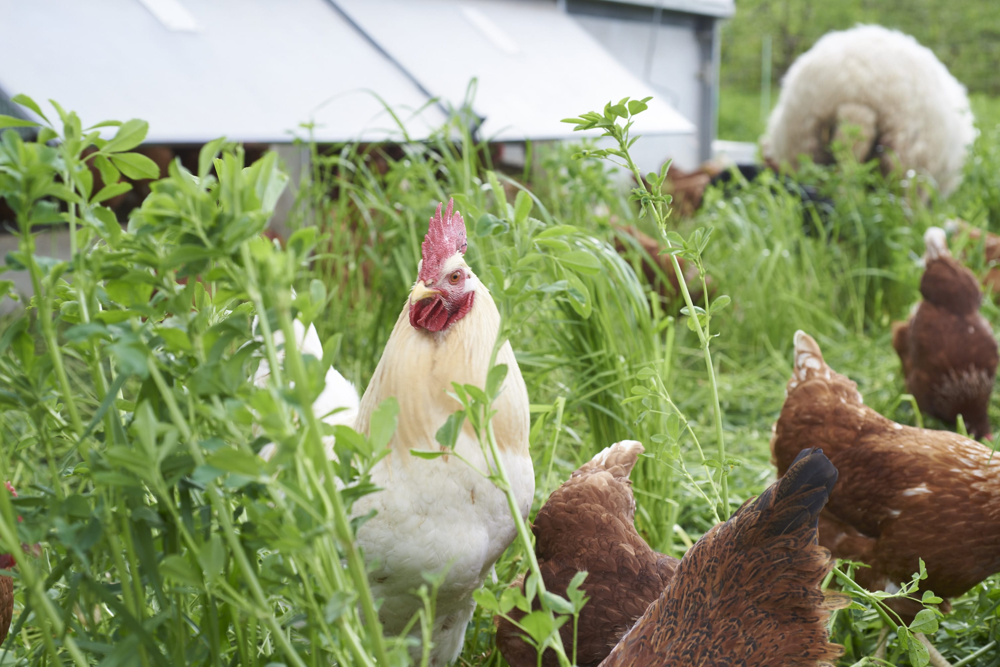
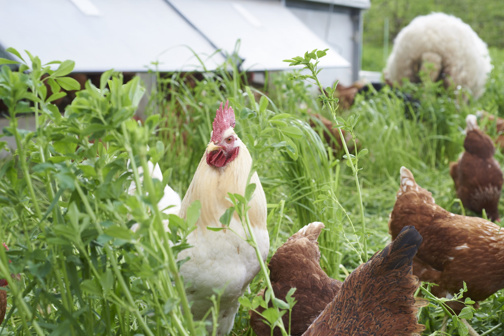

Für ernährungs- und umweltbewusste Personen, die wenig Zeit zum Einkaufen haben, ist Fresa das Mikrodepot und der Lieferservice
regionaler Lebensmittel, der Zeit spart und den Bezug zur Regionalität schafft. Im Gegensatz zu anderen Lieferdiensten
und Einzelhändlern liefert Fresa faire, frische Ware in personalisierten Boxen an frei wählbare Lieferstationen.
Einzigartiger Service
Frische Ware ohne Zwischenhändler
Bezug zur Regionalität schaffen
Frei wählbare Lieferstationen
Mehr als nur Bio
Auf die Frage, wer oder was das Interesse an Bio-Lebensmitteln gestärkt und geweckt hat, antworteten ganze 65% der
Befragten in einer Studie des Bundesministerium für Ernährung und Landwirtschaft, dass es von privaten Kontakten
stammt, welche ebenfalls Nutzer/-innen von Bioprodukten sind. Als zweithäufigste Aussage stellte sich die ärztliche
Empfehlung und eigene Initiative als Anregung heraus, Bio-Lebensmittel zu verzehren. Andere relativ häufig genannte
Beweggründe waren etwa reine Neugier oder neue Produkte im gewohnten Supermarkt Sortiment auszuprobieren, sowie Werbung
durch Bioläden und Beratung in diesem oder direkt vom Erzeuger.
Philosphie
Der direkte Kontakt vom Verkäufer zum Kunden, das ist es, was Menschen schätzen, wenn es um regionale Lebensmittel
geht. Bei der Begrüßung angefangen, wird der Kaufprozess von mehreren Ereignissen begleitet. Diese führen dazu, dass
der Kunde einen Bezug zum Produkt und zum Erzeuger entwickelt. Hierzu gehören aber auch die Ware anfassen, daran
riechen und das Produkt mit allen Sinnen erleben. Das alles schafft die nötige Vertrauensbasis und ist wesentlicher
Bestandteil beim Kauf von regionalen Lebensmitteln. Menschen, die bewusst regionale Lebensmittel kaufen, möchten
auf diese Dinge nicht verzichten. Umfragen auf städtischen Wochenmärkten bestätigten dies. Die eben genannten Faktoren
fallen im Online Lebensmittelhandel weg und sind so gut wie nicht zu ersetzen. Darum ist es notwendig, einen Online
Markt für regionale Lebensmittel mit einer Anlaufstelle zu kombinieren, die dazu dient, dem Kunden einen Bezug zum
Produkt sowie zum Erzeuger zu ermöglichen.
 
